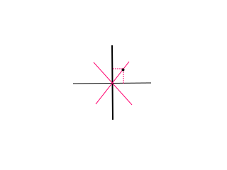

会发现x和y总是相互影响。
第一种解法是想办法用新的互不影响的x和y代替原来的x,y，这是一个很常见的写法。
把图旋转逆时针转45度，建立出一个新的座标系：

红色的表示原来的座标系。
现在考虑当“全”沿着原来的座标系走时，我们可以把他的路径分解成两个。
新座标系的单位长度改成原来的21时，
他的四个操作在新座标系变成了(+1,+1),(+1,-1),(-1,+1),(-1,-1)。
这样x和y的决策就互不影响了。
要到达的座标在新座标系为(x-y,x+y)
最后加上组合数就有最终答案：
(2k−(x−y)k)∗(2k−(x+y)k)
第二钟解法用了一个公式。
现在设有x个操作沿着正方向,y个操作沿着负方向。
根据题意有(x-y)=(a+b),(x+y)=k(然而这个并不重要）
爆搞出答案求和式(z表示"全"沿x轴负方向走的步数)：
(xx+y)z∑(a+zx)(zy)
=(xx+y)z∑(a+zx)(j−zy)
然后有一个叫范德蒙德恒等式的公式可以套：
∑i=1kti=m∑(t1n1)(t2n2)⋯(tknk)=(m∑j=1knj)
正确性显然，就是k个不同颜色的球，第i种有nk个，要取m个出来，求方案。
这样的话∑z(a+zx)(j−zj)就可以变成(a+jx+j)
所以最终答案是：
(xx+y)(a+jx+j)
code